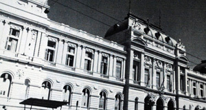
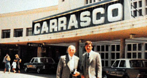
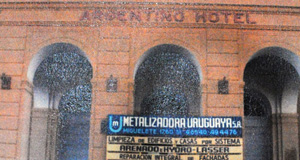

Historia
Somos una empresa con más de 40 años de actividad ininterrumpida en plaza.
Somos una empresa con más de 40 años de actividad ininterrumpida en plaza.
Es en el año 1966 que los Hnos. Carlos y Héctor Gallo deciden comprar una pequeña auque añosa empresa familiar llamada Cafaro Hnos. fundada en el año 1933, situada en el barrio del Cordón en Montevideo Uruguay. Esta empresa se dedicaba a los Arenados y Metalizados en planta con un perfil netamente artesanal
Es del principal rubro que los Hnos. Gallo toman el nombre que dará inicio a nuestra empresa METALIZADORA URUGUAYA S.A que hoy cuenta con más de 45 años de trayectoria.
Si bien en los primeros años mantuvieron el perfil artesanal de los trabajos estos fueron incursionando y transformando la empresa en una pujante herramienta industrial .
Es así que pocos años mas tarde comienzan los trabajos en el exterior de sus talleres realizando tratamientos en tanques para firmas como Fabrica Nacional de Cerveza y para la firma CIR S.A. una de las principales siderúrgica del país.
A partir de ahí con pujanza e inventiva se fue ampliando la cartera de clientes industriales, logrando aproximadamente por el año 1970 que la industria frigorífica y mas aun que los compradores extranjeros avalen el metalizado como una alternativa sanitaria al acero inoxidable permitiendo tratar in situ estructuras imposibles de desmontar.
 Esta actividad que contribuyo a que nuestro país fuera lo que hoy es en materia de exportación de carnes, le creo un gran desafió a nuestra empresa debido fundamentalmente a la estacionalidad de la actividad y la gran cantidad de frigoríficos que requerían nuestros servicios (Carrasco, Canelones, Tacuarembó, La Caballada, Codadesa, Santos Lugares, entre muchos otros que podemos recordar) esto nos obligaba a la importación de equipamiento, el cual quedaba ocioso buena parte del tiempo.
Es así que luego de un viaje que uno de los fundadores realizara a Europa observara que en esos momentos se estaban restaurando en Paris monumentos y edificios históricos, con equipos similares a los nuestros, si bien con técnicas y abrasivos diferentes.
Una vez arribado se plantea la oportunidad, se generan los contactos con empresas del exterior para aprender las técnicas y se realizan las modificaciones a los equipos ya existentes generando que nuestra empresa se convierte en la pionera y principal empresa de restauración edilicia, realizándose las principales obras nacionales tanto publicas como privadas.
La historia no termina allí, más trabajo y más y mejor equipamiento, mas capacitación e inversión nos obligaron a ir siempre hacia delante.
Se incorporaron a nuestro trabajo nuevas áreas como la naval y la petroquímica, logrando aquí también posicionarnos cono la mayor empresa nacional en la preparación de superficies y aplicación de pinturas en grandes superficies y estructuras como sin duda lo son los Barcos y los Tanques de Combustible, brindándole servicio al dique Regusci y Voulminot en un comienzo que posteriormente fuera adquirido
por el grupo Tsakos Industrias Navales y a la Armada Nacional en todos sus diques y barcos a flote como también en la industria petroquímica siendo la empresa ANCAP uno de nuestros principales clientes.
La incorporación de tecnologías, productos y métodos de primer nivel nos condujo a la introducción en nuestro medio de elementos como las siliconas para protección edilicia, pinturas acrílicas para fachadas o las pinturas lideres a nivel mundial para el área industrial, que permitió que los fabricantes de las mismas contaran con una empresa seria y responsable para otorgar garantías mancomunadas, cosa sin precedentes a nivel nacional
En el aislamiento térmico y humidico también dijimos presente si bien no fuimos los primeros si fuimos quienes a través de equipamiento y producto dimos la expansión y generamos el mercado de lo que es hoy el poliuretano expandido.
Es así en un constante buscar y encontrar, invertir y arriesgar, aprender y enseñar, que nuestra empresa se mantiene líder en el mercado luego de 45 años de interrumpida trayectoria.